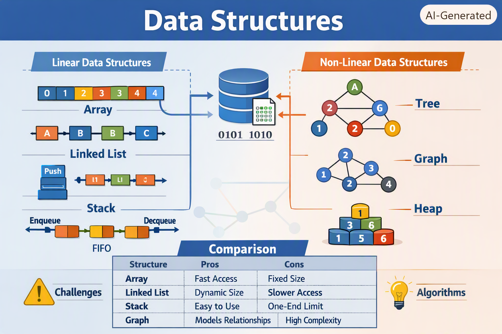

THIS WEBSITE INCLUDES TOPICS LIKE:
DATA STRUCTURES are the backbone of computer science—they define how data is organized, stored, and accessed efficiently. Mastering them is essential for solving problems in programming, building applications, and cracking technical interviews.
📘 What Are Data Structures?
A data structure is a way of organizing data in a computer so it can be used effectively. The goal is to minimize time complexity (speed of operations) and space complexity (memory usage).

JAVA SCRIPT is one of the most powerful and widely used programming languages in the world 🌍 — it’s what makes websites interactive, dynamic, and smart.
⚙️ What Is JavaScript?
JavaScript (often shortened to JS) is a client-side scripting language that runs directly in the browser. It allows web pages to respond to user actions — like clicks, typing, or scrolling — without needing to reload.
🧠 Why JavaScript Matters
🧠 What Is OOP?
Object-Oriented Programming is a paradigm that organizes code around objects rather than functions.
Objects combine data (attributes) and behavior (methods) into a single unit.
🔑 Core Principles of OOP in C++
1. Encapsulation
Wrapping data and methods into a single unit (class).
Protects data using access specifiers (private, public, protected).
EXAMPLE:
class Student {
private:
int age; // hidden data
public:
void setAge(int a) { age = a; }
int getAge() { return age; }
};
class Shape {
public:
virtual void draw() = 0; // pure virtual function
};
class Animal {
public:
void eat() { cout << "Eating..."; }
};
class Dog : public Animal {
public:
void bark() { cout << "Barking..."; }
};
// Overloading
int add(int a, int b) { return a+b; }
double add(double a, double b) { return a+b; }
// Overriding
class Base {
public:
virtual void show() { cout << "Base class"; }
};
class Derived : public Base {
public:
void show() override { cout << "Derived class"; }
};
My First Website
Hello World!
This is my first webpage.
!DOCTYPE html → tells the browser this is HTML5.
html→ root element.
head → contains metadata (title, styles, scripts).
body→ contains visible content.